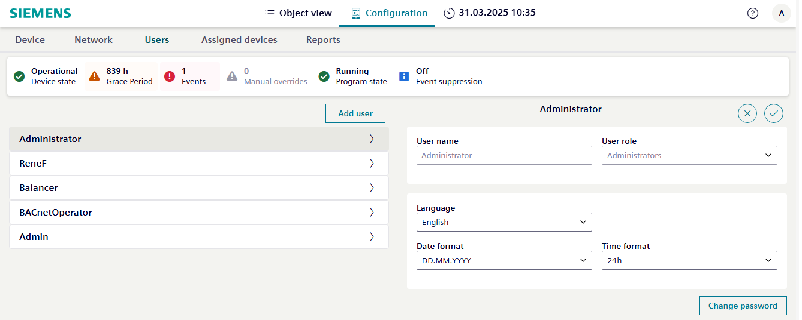

Creating/modifying users
Use the procedure in this section to create or modify users for a Desigo device. For more information, see Users tab.

It is not recommended to create a user in the Web interface, as the users cannot be read back to ABT Site.
- Go to the Configuration tab.
- Select the Users tab.
- Do one of the following:
- Select Add user, complete the fields outlined in the user properties, and select Add user to save the user profile.
- Select an existing user profile to edit or modify the fields outlined in the user properties, and select to save your changes.
- Select an existing user profile to delete and then select Delete user.

Changing the device password
- Select Change password.
- The Change password dialog box opens.
- Do the following:
- In the Enter your current password text field, enter the old password.
- In the New password text field, enter the new password. Define a strong password.
- In the Confirm password text field, confirm the new password.
- Select Save.